Royal Rotations
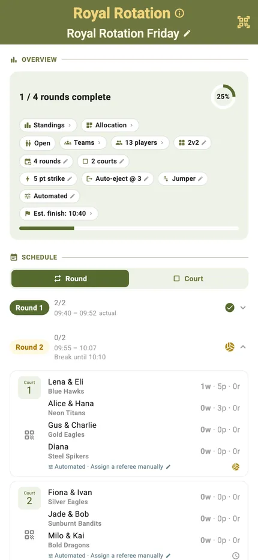
Two formats at once. The whole pool is scrambled into fresh pairs every round, the way a Social Scramble does it — and then each court is played as King of the Court, so holding on is worth points.
It means you get a new partner all evening and still have something to defend while you are on court. TournaQ draws the pairs, runs the queue on every court at the same time, and keeps one individual ranking across the lot.
Best for
- Bigger groups across several courts who want movement and a scoreboard
- Sessions where a plain scramble feels too gentle and a straight king feels too static
- Clubs mixing abilities — new pairs each round keep the games level
Finding it in the app
Royal Rotations lives under Single Competitions & Socials in the TournaQ Arena. The hub keeps every session you have run, so last week's is two taps away.

The Arena
Every format the app can run, grouped by the kind of session it suits. The number on a card is how many of those you have run.
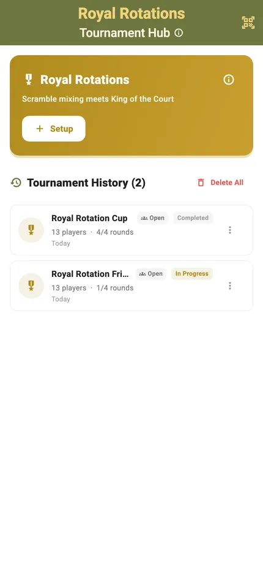
The Royal Rotations hub
New Tournament starts a session. Below it sits your history, each entry showing the date, the player count and how far it got.
Setting it up
Set the pool, the courts and the strike target. TournaQ draws the pairs and works out how many rounds fit in the time you have.
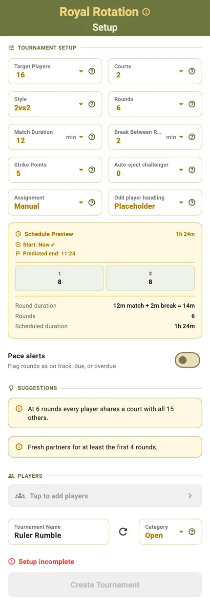
One form for both halves
The scramble settings — players, rounds, how often partners change — sit next to the king settings: the strike target, the swap rule and the jumper. Every field feeds the Schedule Preview, so the finish time moves as you decide.
Nothing is mandatory beyond players and time; the defaults produce a sensible session on their own.
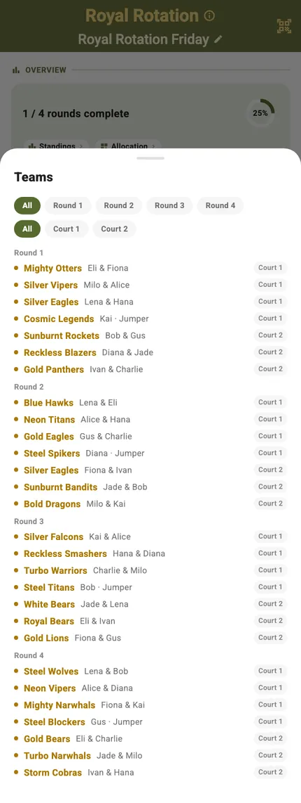
The pairs it drew
Each round produces a fresh set of teams, and the teams sheet shows exactly who has been put with whom. It is the answer to "who am I with this round?" without anyone having to ask.
The session at a glance
One screen carries several courts at once: how far along you are, which pairs are where, who is queuing, and when you will finish.
Progress and settings in one row
Rounds complete, a progress ring and a row of pills — standings, allocation, teams, player count, format, strike target, swap rule and estimated finish. A pill with a pencil can still be changed; one with a lock was fixed when play started.
Round by round, or court by court
The schedule groups by round out of the box. Switch it to Court and each court lists its own sequence — which is the view you want when three courts are running their own king at once.
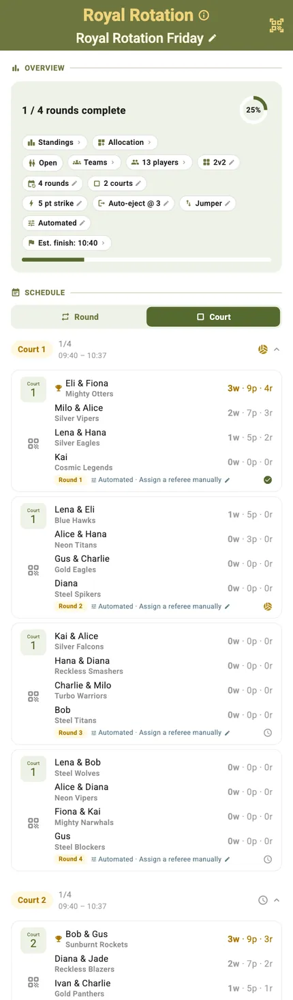
Who is on which court
The allocation grid lays every round against every court. With a big pool spread over several courts, this is the screen that shows whether the draw is treating everyone equally.
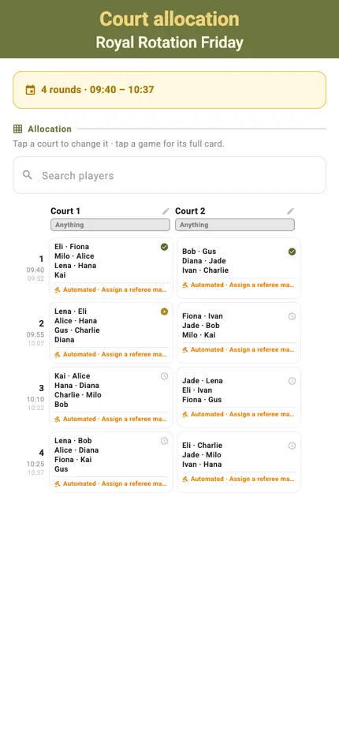
Scoring a match
Each court runs its own king: the pair on, the pair challenging, and the queue behind them, with the scoring controls under your thumb.
Portrait
The court, the challengers and the queue on one screen, with the session timer in the header. Tap to score, undo to take it back, and the strike count updates as you go.
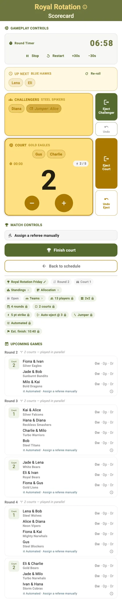
Landscape
Turn the phone and the same controls rearrange for a net post or a table at the side of the court. Nothing is hidden — the layout changes, the functions do not.
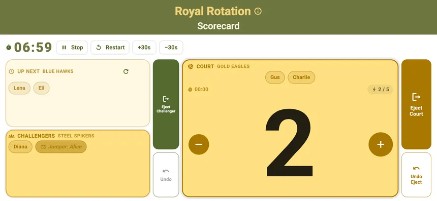
Strikes
A strike is what ends a hold. TournaQ announces it, banks the points and moves the court on, so nobody has to keep a tally in their head while playing.
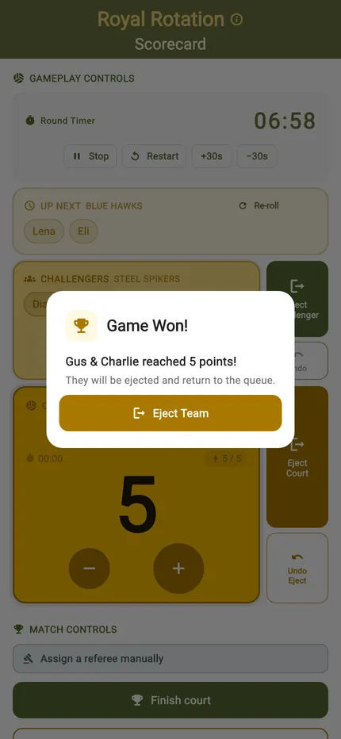
Fresh pairs, moving queue
Two things rotate here: the partners between rounds, and the challengers within a round. Both are handled for you.
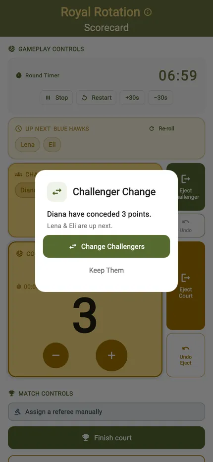
Challengers rotate automatically
When a hold ends the next pair comes on and the card says who they are. Nobody has to remember whose turn it was, and nobody quietly skips the queue.
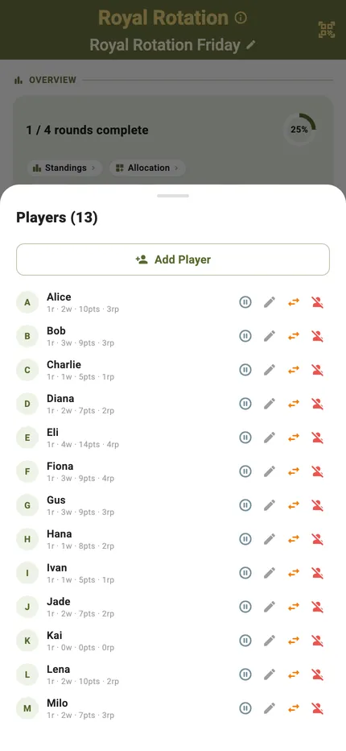
The player list is the control panel
Everyone in the session with their games played and points so far. Each row carries the four things you need mid-evening: pause a player, correct a name, swap them with someone else, or take them out.
Standings, live and final
Partners change every round, so the ranking is individual — points follow the player, not the pair.
Live standings
Every player with their points, games played and win record, ordered as it stands right now. Players check it between rounds without asking anyone.
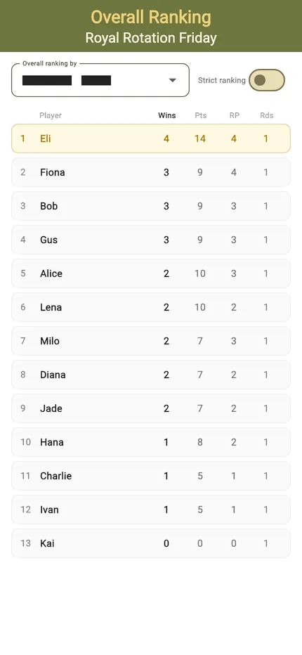
Final rankings
When the last round is in, the table closes with the winner at the top: the player who held court most across every partner they were given.
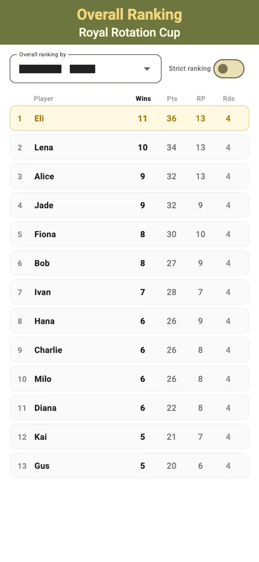
The finished session
The schedule keeps every result. A completed session stays in the hub with all its scores, so a question about last month's session has an answer.
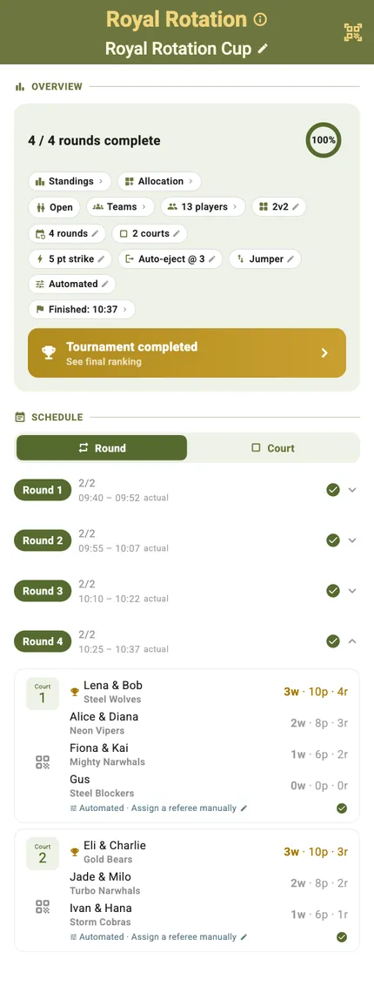
Start to finish
- Open the TournaQ Arena and pick Royal Rotations — still labelled Scramble King in the app.
- Tap New Tournament.
- Set the players, courts and match length, then the strike target and the swap rule.
- Add the players and name the session.
- Tap Create Tournament.
- Check the teams sheet to see the pairs it drew for round one.
- Open a court and start the timer.
- Tap to award each point; undo takes back the last one.
- A strike ends the hold — the next pair rotates on automatically.
- New partners are drawn for the next round; play it out and read the final rankings.
Have a question about Royal Rotations, spotted something missing, or want to suggest an improvement?